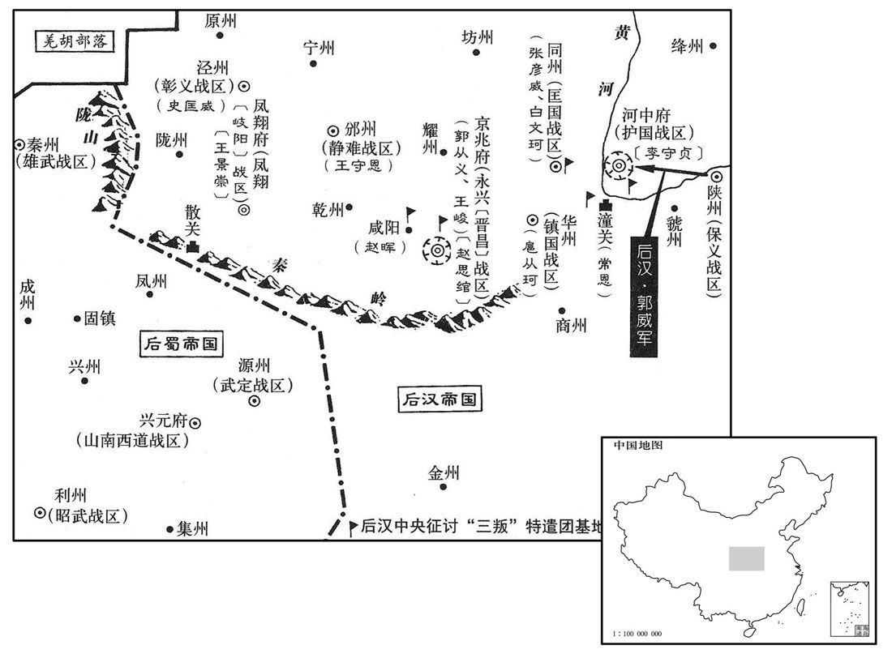
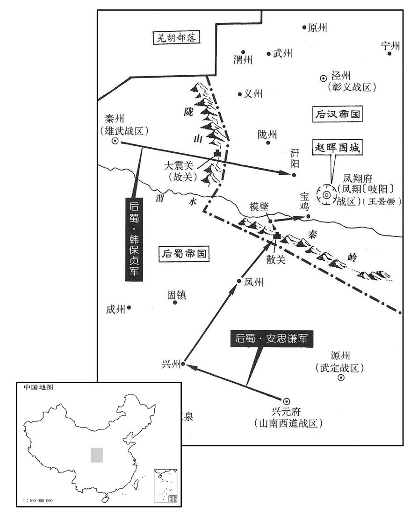
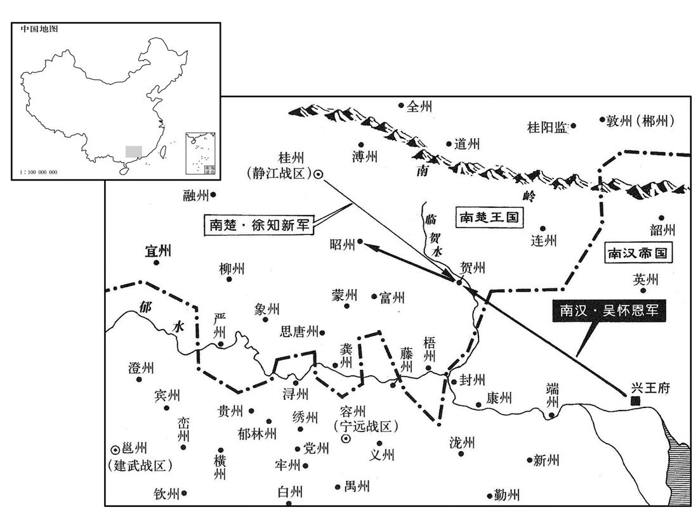
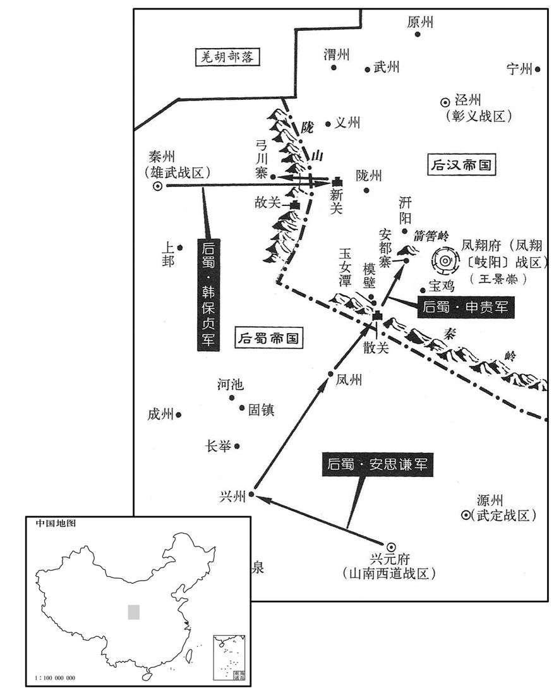

公元948年资治通鉴：本年记事、原文与白话对照
按原书编年位置阅读；追叙和史论不等于本年发生的事件。白话采用所据译本，缺译不以生成译文补齐。
卷287 · 本年记事
公元948年 · 后汉高祖睿文圣武昭肃孝皇帝干佑元年
干佑元年〔（戊申、九四八）〕
上传原文的注释括号有异常，字符原样保留；无法可靠划分的段落默认全文显示。
本年记事分属相邻卷，按原书顺序分别保留：第287卷 · 第288卷。
本年事件索引（现代整理）
- 后汉大赦并改元乾祐
- 后汉派王景崇等赴关西应接回鹘并经略关中
- 李恕劝赵匡赞归附后汉，后汉高祖允许其入朝
- 后汉高祖改名刘暠
- 后汉任冯道为太师
- 吴越王钱弘俶将钱弘倧迁居衣锦军并派兵护卫
- 后汉高祖因皇子刘承训之死悲痛过度而病倒
- 赵匡赞不等李恕回报便离开长安入朝后汉
- 王景崇到长安后组织兵力抵御后蜀并听任赵思绾自请刺面
- 王景崇在子午谷击败后蜀李廷珪，后蜀军撤退溃散
- 后汉高祖病危时将幼子刘承祐托付给苏逢吉杨邠史弘肇郭威
- 后汉高祖刘知远去世，顾命大臣暂时秘不发丧
- 后汉诏令处死杜重威及其子，杜重威尸体被百姓分食
- 后汉立刘承祐为周王并在刘知远死后即皇帝位
- 后蜀将领返回并召何重建入蜀，何重建遂降后蜀
- 后汉尊皇后李氏为皇太后
- 后汉以刘在明取代白再荣主持成德军
- 后汉大赦天下
- 吴越王钱弘俶因何承训反复请杀胡进思而将其处死
- 钱弘俶拒绝杀废王钱弘倧，薛温挫败胡进思派人行刺
- 钱弘俶畏惧胡进思而曲意相待，胡进思不久病死
- 后汉命王景崇兼任凤翔巡检使，侯益趁乱离开凤翔入朝
- 后蜀张虔钊无功而返并在兴州怨愤而死
- 史弘肇母亲去世后不久即恢复朝参

本年形势与背景参考图

本年形势与背景参考图

本年形势与背景参考图

本年形势与背景参考图
春，正月，乙卯，大赦，改元。
春季，正月，乙卯（初五），后汉高祖大赦天下，改年号为乾。
帝以赵匡赞、侯益与蜀兵共为寇，患之。会回鹘入贡，诉称为党项所阻，〔自唐长兴以来，西路党项部族劫掠使臣及外域进奉，唐虽遣兵讨之，莫能遏止。党，底朗翻。〕乞兵应接。诏左卫大将军王景崇、将军齐藏珍将禁军数千赴之，因使之经略关西。〔因应接回鹘使者之名以出师，实则经略关右。〕
后汉高祖因为赵匡赞、侯益和后蜀兵联合侵犯，深感忧虑。正赶上回鹘送来贡品，诉称在路上被党项人所阻拦，请求发兵接应。高祖诏令左卫大将军王景崇、将军齐藏珍率领禁军几千人赶赴，乘此让王景崇等人取得关西。
晋昌节度判官李恕，久在赵延寿幕下，延寿使之佐匡赞。匡赞将入蜀，恕谏曰：「燕王入朝，〔【章：十二行本「朝」作「胡」；乙十一行本同；孔本同。】〕岂所愿哉！〔言赵延寿受囚锁于契丹而入北。〕今汉家新得天下，方务招怀，若谢罪归朝，必保富贵。入蜀非全计也，『蹄涔不容尺鲤』，刘曜之言。涔，锄针翻。蹄涔，谓牛马所践之迹，因而渟水处也，非盈尺之鲤所可容身；以喻蜀小国，势不能容赵匡赞。〕公必悔之。」匡赞乃遣恕奉表请入朝。景崇等未行而恕至，帝问恕：「匡赞何为附蜀﹖」对曰：「匡赞自以身受虏官，〔谓先受契丹主耶律德光之命镇河中府。〕父在虏庭，〔父，谓赵延寿。〕恐陛下未之察，故附蜀求苟免耳。臣以为国家必应存抚，故遣臣来祈哀。」帝曰：「匡赞父子，本吾人也，不幸陷虏。今延寿方坠槛㗳，〔赵延寿为契丹所锁，事见去年五月。〕吾何忍更害匡赞乎！」即听其入朝。侯益亦请赴二月四日圣寿节上寿。〔五代会要：帝生于唐干宁二年二月四日。〕景崇等将行，帝召入卧内，敕之曰：「匡赞、益之心，皆未可知。汝至彼，彼已入朝，则勿问；若尚迁延顾望，当以便宜从事。」
晋昌节度使判官李恕，多年在赵延寿幕府中，赵延寿派他去辅佐赵匡赞。赵匡赞将要入蜀，李恕劝谏说：“燕王身入契丹朝，难道是他自愿的吗？现在汉家新得天下，正致力招降怀远，如果认罪回归朝廷，一定能保住富贵。到后蜀去不是万全之策，‘牛马蹄印里的水，容不得尺长的鲤鱼’，您一定会后悔。”赵匡赞于是派李恕去后汉奉上降表请求入朝。王景崇等人还没发兵李恕就到了。高祖问李恕：“匡赞为什么归附蜀？”答道：匡赞认为自己因为身受胡虏的官职，父亲又在胡虏朝廷，怕陛下不能详察，所以依附蜀国寻求苟且免杀。臣认为国家一定应能收留抚慰，所以就派臣来祈求哀怜。”高祖说：“匡赞父子，本来就是我们的人，不幸身陷于胡虏之中。如今延寿刚落入胡虏的监狱，我又怎能忍心再加害于匡赞呢！”立即让他入朝。侯益也请求赶赴二月四日圣寿节恭贺高祖生日。王景崇等人要走，高祖召入卧室中，敕令道：“赵匡赞、侯益的心，都不可知。你们兵到那里，他们已经入朝，就不再过问；如果他们还在迁延观望，应当随机从事。”
己未，帝更名暠。〔更，工衡翻。暠，古老翻。〕
己未（初九），后汉高祖改名为。
以前威胜节度使冯道为太师。
后汉高祖任命前威胜节度使冯道为太师。
壬戌，吴越王弘俶迁故王弘倧于衣锦军私第，〔迁于临安私第也。〕遣匡武都头薛温将亲兵卫之。潜戒之曰：「若有非常处分，皆非吾音，当以死拒之。」〔处，昌吕翻。分，扶问翻。弘俶知胡进思必谋杀弘倧，故密约敕薛温使知所备。为进思害弘倧而不克张本。〕
壬戌（十二日），吴越王钱弘把原来的吴越王钱弘迁到衣锦军的私宅，派匡武都头薛温领亲兵守卫，并悄悄告诫薛温：“如果有非常的处理，都不是我的意思，你应当拼死拒绝。”
帝自魏王承训卒，悲痛过甚。甲子，始不豫。
后汉高祖自从魏王刘承训去世，过于悲伤哀痛，甲子（十四日），开始发病。
赵匡赞不俟李恕返命，已离长安，丙子，入见。〔离，力智翻。见，贤遍翻。〕
赵匡赞没等李恕回长安述命，就离开长安去，丙子（二十六日），入京朝见。
王景崇等至长安，闻蜀兵已入秦川，〔自大散关以北达于岐、雍，夹渭川南北岸，沃野千里，谓之秦川。〕以兵少，发本道及赵匡赞牙兵千余人同拒之。〔本道，谓晋昌一道。〕景崇恐匡赞牙兵亡逸，欲文其面，微露风旨；军校赵思绾，首请自文其面以帅下，〔文其面以军号，则亡逸无所至。校，户教翻。帅，读曰率。〕景崇悦。齐藏珍窃言曰：「思绾凶暴难制，不如杀之。」景崇不听。思绾，魏州人也。〔为赵思绾据长安反张本。〕
王景崇等来到长安时，听说后蜀军队已开入秦川，因为自己带的兵少，就起用本道兵马和赵匡赞的一千多名牙兵共同拒敌。王景崇恐怕赵匡赞的牙兵逃跑，想在他们的脸上刺字，稍微透露出一点风声；牙兵的军校赵思绾首先请求在自己脸上刺字来统率部下，王景崇很高兴。齐藏珍悄悄说：“赵思绾凶猛暴戾，难以制服，不如杀掉他。”王景崇不听。赵思绾是魏州人。
蜀李廷珪将至长安，闻赵匡赞已入朝，欲引归，王景崇邀之，败廷珪于子午谷。〔败，补迈翻；下追败同。〕张虔钊至宝鸡，诸将议不协，按兵未进；侯益闻廷珪西还，因闭壁拒蜀兵，虔钊势孤，引兵夜遁。景崇帅凤翔、陇、邠、泾、鄜、坊之兵追败蜀兵于散关，俘将卒四百人。〔李廷珪、张虔钊二军，皆蜀主去年十二月所遣。帅，读曰率。鄜，音夫。败，补迈翻。〕
后蜀李廷快到长安时，听说赵匡赞已向后汉皇帝朝拜，想率兵退回蜀地；王景崇拦击，在子午谷打败李廷。张虔钊到达宝鸡，众将意见不一致，按兵不动。侯益听说李延向西返回，于是关闭壁垒抗拒后蜀军队。张虔钊见势力孤单，率领军队连夜逃跑。王景崇率领凤翔、陇、、泾、、坊六州的兵马追击，在散关打败后蜀军队，俘虏兵将四百人。
丁丑，帝大渐。杨邠忌侍卫马军都指挥使、忠武节度使刘信，立遣之镇。〔刘信以从弟之亲典侍卫，故杨邠忌之，遣就镇许州。〕信不得奉辞，雨泣而去。〔涕泣如雨，谓之雨泣。〕
丁丑（二十七日），后汉高祖病危，杨妒忌侍卫马军都指挥使、忠武节度使刘信，立刻送他前往镇所。刘信不能辞行，泪如雨下而离去。
帝召苏逢吉、杨邠、史弘肇、郭威入受顾命，曰：「余气息微，不能多言。承佑幼弱，后事托在卿辈。」又曰：「善防重威。」〔谕以诛杜重威也。〕是日，殂于万岁殿，〔年五十四。薛史：梁受禅，以大梁万岁堂为万岁殿。〕逢吉等秘不发丧。
后汉高祖召苏逢吉、杨、史弘肇、郭威入宫接受遗嘱，说：“我气息微弱，不能多说。刘承年幼弱小，一切后事拜托各位爱卿。”又说：“妥善防范杜重威。”当天，在万岁殿去世。苏逢吉等人保密而不发布噩耗。
庚辰，下诏，称：「重威公子，因朕小疾，谤议摇众，并其子弘璋、弘琏、弘璨皆斩之。晋公主及内外亲族，一切不问。」〔晋公主，石氏，杜重威之妻。〕磔重威尸于市，〔磔，陟格翻。〕市人争啖其肉，〔啖，徒滥翻。怨杜重威卖国，引虏入汴，而都人被其毒也。〕吏不能禁，斯须而尽。
庚辰（三十日），传下皇帝诏书，声称：“杜重威父子，乘朕小病，毁谤诽议，动摇人心，连同他的儿子杜弘璋、杜弘琏、杜弘璨一起斩首。晋公主及内外亲族，一概不予追究。”将杜重威尸的肢体分裂于街市，市民争着咬吃他的肉，官吏不能禁止，一会儿尸体就被咬光了。
二月，辛巳朔，立皇子左卫大将军、大内都点检承佑为周王，同平章事。有顷，发丧，宣遗制，令周王即皇帝位。时年十八。
二月辛巳朔（初一），立皇子左卫大将军、大内都点检刘承为周王，同平章事。不久，发布丧事，宣读遗制，命周王即皇帝位。那年，刘承十八岁。
蜀韩保贞、庞福诚引兵自陇州还，〔韩保贞亦蜀主去年十二月所遣。还，从宣翻，又如字。〕要何重建俱西。是日，保贞等至秦州，分兵守诸门及衢路，重建遂入于蜀。〔要，一遥翻。天福十二年，何重建附蜀，至是蜀兵劫与俱西。〕
后蜀韩保贞、庞福诚率兵从陇州返回，约何重建一起西行。这天，韩保贞等到达秦州，分兵把守各城门及大路，何重建于是进入后蜀。
丁亥，尊皇后曰皇太后。
丁亥（初七），后汉尊皇后为皇太后。
朝廷知成德留后白再荣非将帅才，庚寅，以前建雄留后刘在明代之。
后汉朝廷知道成德留后白再荣不是将帅之才，庚寅（初十），派前建雄留后刘在明前往取代他。
癸巳，大赦。〔即为十三日而肆赦。〕
癸巳（十三日），大赦天下。
吴越内牙指挥使何承训复请诛胡进思及其党。〔复，扶又翻。〕吴越王弘俶恶其反复，且惧召祸，乙未，执承训，斩之。〔恶，乌路翻。何承训泄弘倧之谋以陷君于幽废，而又请弘俶诛胡进思，谁敢复与之谋乎！〕
吴越内牙指挥使何承训又请求诛杀胡进思及其党羽。吴越王钱弘厌恶他反复无常，而且怕召来祸患，乙未（十五日），把何承训抓起来斩首。
进思屡请杀废王弘倧以绝后患，弘俶不许。进思诈以王命密令薛温害之，温曰：「仆受命之日，不闻此言，不敢妄发。」进思乃夜遣其党方安二人踰垣而入，弘倧阖户拒之，大呼求救；〔呼，火故翻。〕温闻之，率众而入，毙安等于庭中。入告弘俶，〔自临安入钱唐告其事。〕弘俶大惊，曰：「全吾兄，汝之力也。」
胡进思屡次请求杀掉废王钱弘以绝后患，钱弘不允许。胡进思假称王命，密令薛温害死钱弘，薛温说；“我自受命守卫那天起，没有听到过这句话，不敢妄自行动。”胡进思就在夜里派出他的党羽方安二人跳墙而入，钱弘关门抵抗，大喊求救；薛温听到，率众兵冲入，在院中杀死方安二人。薛温到钱唐报告钱弘，钱弘大吃一惊，说：“保全我哥哥，全靠你的力量啊！”
弘俶畏忌进思，曲意下之。〔下，户嫁翻。〕进思亦内忧惧，未几，疽发背卒。〔几，居岂翻。〕弘倧由是获全。
钱弘畏惧提防胡进思，极力对他低三下四。胡进思也心中担忧害怕，不久，背上恶疮发作而死。钱弘因此得以保全。
诏以王景崇兼凤翔巡检使。景崇引兵至凤翔，侯益尚未行，景崇以禁兵分守诸门。或劝景崇杀益，景崇以受先朝密旨，〔密旨，谓高祖卧内便宜从事之命也，见上。朝，直遥翻；下同。〕嗣主未之知，或疑于专杀，犹豫未决。益闻之，不告景崇而去，景崇悔，自诟。〔诟，古候翻，又许候翻。〕戊戍，益入朝，隐帝问：「何故召蜀军﹖」对曰：「臣欲诱致而杀之。」帝哂之。〔诱，音酉。哂，矢忍翻。笑不坏颜为哂。〕
后汉隐帝刘承诏令王景崇兼凤翔巡检使。王景崇领兵到达凤翔，侯益还没有启程，王景崇让禁兵分守各个城门。有人劝说王景崇杀掉侯益，王景崇说因接受先朝“便宜行事”的密旨，但新皇帝不知道，或许会怀疑擅自杀戮，所以犹豫不决。侯益听到风声，不与王景崇告别而离去，王景崇十分后悔，骂自己。戊戌（十八日），侯益入朝谒见后汉隐帝。隐帝问：“为什么招蜀军？”回答道：“臣想把他们诱到凤翔而杀掉。”隐帝微微一笑。
蜀张虔钊自恨无功，癸卯，至兴州，凓忿而卒。〔自散关还至兴州也。张虔钊盖不知可否，不度利钝，而急于求功之人，观其攻王都于定州，攻潞王于凤翔，皆急于求胜而败可知已。恚，于避翻。〕
后蜀张虔钊恨自己劳师无功，癸卯（二十三日），到达兴州，惭愧忿闷而死。
侍卫马步都指挥使、同平章事史弘肇遭母丧，不数日，复出朝参。〔复，扶又翻。居丧而经营起复，已得罪于名教；未起复而自出朝参，虽史弘肇武人无识，亦可见朝章之紊。朝，直遥翻。〕
后汉侍卫马步都指挥使、同平章事史弘肇因母去世在家居丧，但没过几天，又出来上朝参政。
卷288 · 本年记事
公元948年 · 后汉高祖睿文圣武昭肃孝皇帝干佑元年
干佑元年〔（戊申、九四八）〕
上传原文的注释括号有异常，字符原样保留；无法可靠划分的段落默认全文显示。
本年记事分属相邻卷，按原书顺序分别保留：第287卷 · 第288卷。
本年事件索引（现代整理）
- 后汉起复史弘肇并加兼侍中
- 侯益厚赂执政和史弘肇后获任开封尹
- 后汉将广晋府改为大名府并将晋昌军改为永兴军
- 侯益在朝中诋毁王景崇，赵思绾因惧入朝获罪而准备叛乱
- 赵思绾趁入城搬家夺取长安并起兵控制州城
- 王景崇请求朝廷任命自己主持凤翔，朝廷改派王守恩与赵晖
- 虢州艺人靖边庭杀死团练使田令方后劫掠州民
- 孙方简不满契丹任命而据狼山，后又归附后汉以抵御契丹
- 孙方简等收复定州易州，契丹占据的晋末州县重新归汉
- 后汉任刘在明为成德节度使
- 契丹主以失守罪鸩杀麻荅
- 杨邠反对苏逢吉等人频繁任命官员，宰相间产生嫌隙
- 李涛建议调任两位枢密使掌管要镇，后汉隐帝罢免李涛
- 护国李守贞与永兴凤翔诸镇上报谋反
- 李守贞因杜重威被杀而惧怕后汉，暗中扩军联络契丹
- 赵修己多次劝李守贞不要妄动，僧人总伦却预言他将称帝
- 赵思绾献后晋御衣后，李守贞自称秦王并据潼关
- 张彦威预先派兵守同州，使李守贞未能兼并该州
- 定难节度使李彝殷请兵讨伐羌族叛军，朝廷以不宜先动兵劝止
- 后汉收复潼关
- 后汉隐帝任杨邠为宰相并提升郭威与王章职权
- 杨邠独揽政事并限制官员任命，士大夫仕进受阻
- 后汉派郭从义白文珂等分路进兵讨伐赵思绾李守贞
- 王景崇留在凤翔集结丁壮并暗中策划叛乱
- 契丹主在辽阳逼后晋出帝交出未婚女儿赐给妻兄
- 王景崇致书后蜀凤州刺史徐彦请求互市
- 后晋翰林学士徐台符从幽州逃回
- 黄河在滑州鱼池决口
- 后汉发生日食
- 后汉任刘词为河中行营马步都虞候
- 王景崇遣使向后蜀请降并接受李守贞所授官爵
- 高从诲与后汉断交后因商旅不至而请罪恢复朝贡
- 后汉尚洪迁攻长安时伤重身亡
- 后汉任李谷为西南面行营都转运使
- 后汉加郭威同平章事
- 后蜀主孟昶处死贪暴的张业并令王处回辞去中枢职务
- 后蜀主孟昶罢免王处回并任其为武德节度使
- 后蜀任高延昭王昭远参与枢密事务并纵容二人掌管府库
- 后汉任郭从义为永兴节度使并令白文珂暂知河中行府事
- 后蜀任李昊与徐光溥为宰相
- 后蜀安思谦诬告赵廷隐谋反，赵廷隐在李廷珪进言后得以免罪
- 赵晖抵达长安后上奏请求讨伐王景崇
- 刘崇因与郭威有隙而在河东扩军备战并不奉朝廷诏命
- 郭威受命统领西面诸军讨伐河中永兴凤翔叛镇
- 冯道建议郭威厚赏士卒以瓦解李守贞所依恃的军心
- 后汉诏令白文珂进攻河中、赵晖进攻凤翔
- 后蜀授赵廷隐太傅宋王并准其在家参议国事
- 后蜀将凤翔改为岐阳军并任王景崇为节度使
- 后汉封吴越王钱弘俶为东南兵马元帅
- 郭威采纳扈从珂建议先攻河中并以宽厚治军赢得将士归心
- 李守贞原以为旧部会开城迎降，见郭威军士后大惊
- 白文珂攻取河中西关城后诸军分营围城
- 郭威反对急攻河中，命军民修筑长围断绝城中出路
- 后蜀王处回请求退休并获准以太子太傅致仕
- 南汉主遣钟允章赴楚求婚遭拒，认定楚国内乱可乘
- 马希萼请求与马希广分别向后汉进贡并求封官，朝廷要求兄弟和睦
- 南唐赵晖派李彦从击退后蜀散关援军
- 后蜀主设立匦函以便臣民上书
- 王景崇杀害侯益七十余名家属，侯益幼子被乳母救走
- 李守贞多次突围失败并向外求援，仍相信总伦所言将称帝
- 王景崇与赵思绾派儿子赴成都求援
- 赵晖设计诱敌并攻克西关城，王景崇退守凤翔大城
- 后蜀不顾毋昭裔劝阻派安思谦与韩保贞救援凤翔
- 王景崇迎接后蜀援军，申贵设伏击败汉军并攻占宝鸡寨
- 荆南高从诲病重后去世，子高保融接掌军府
- 高允权与李彝殷因边界冲突求援，朝廷出面调解
- 李崧回朝后谨慎避祸，却因家宅争议遭苏逢吉与陶谷排挤
- 史弘肇严刑专杀，后汉民间因恐惧而谣言四起
- 苏逢吉借李屿仆人告变诬陷李崧兄弟谋反并处死其家族
- 陶谷承认自己参与李崧家族冤案，李昉听后惊惧
- 史弘肇厌恶文士并任用亲信杨乙搜刮归德军财利
- 李守贞遣朱舒元与李平向南唐求援
- 南唐派李金全等救援河中，诸军畏战退屯海州
- 南唐主致书后汉请复通商并赦免李守贞，未获回应
- 后汉任高保融为荆南节度使兼同平章事
- 南汉吴怀恩攻取贺州昭州并用陷阱击败楚军
- 王景崇屡向后蜀求援，孟昶对安思谦迟疑出兵不满
- 后蜀安思谦在散关击败后汉守军
- 郭威亲赴华州协调围城战，后蜀援军粮尽撤退
- 后蜀徐光溥因轻薄言辞调戏公主而被罢免
三月，丙辰，史弘肇起复，加兼侍中。
>[1]>三月，丙辰（初七），史弘肇出仕复职，加官兼侍中>。
侯益家富于财，厚赂执政及史弘肇等，由是大臣争誉之。〔执政，谓苏逢吉、杨邠等，皆当时大臣也。誉，音余。〕丙寅，以益兼中书令，行开封尹。〔行者，行尹事，未正除也。〕
>[2]>侯益家里财产丰厚，送厚礼贿赂执掌政权的大臣和史弘肇等人，因此众大臣交口称赞。丙寅（十七日），任命侯益兼中书令，代理开封尹。
改广晋〔【章：十二行本「晋」下有「府」字；乙十一行本同。】〕为大名府，〔左传：晋卜偃曰：「魏，大名也。」取以名府。〕晋昌军为永兴军。〔以革晋命，故改广晋与晋昌。〕
>[3]>改广晋府为大名府，改晋昌军为永兴>军。
侯益盛毁王景崇于朝，言其恣横。〔侯益以王景崇欲杀己，幸免而归朝，故毁之。横，户孟翻。〕景崇闻益尹开封，知事已变，内不自安，且怨朝廷。〔怨朝廷不能体先帝遗旨，反听侯益之谗也。〕会诏遣供奉官王益如凤翔，征赵匡赞牙兵诣阙，赵思绾等甚惧，〔赵思绾，赵匡赞牙校也，见上卷。〕景崇因以言激之。思绾途中谓其党常彦卿曰：「小太尉已落其手，〔赵思绾等本赵延寿部曲，故呼匡赞为小太尉，言匡赞入朝为已落汉人之手也。〕吾属至京师，并死矣，柰何﹖」彦卿曰：「临机制变，子勿复言！」〔复，扶又翻。」
>[4]>侯益在朝中大肆诋毁王景>崇，说他恣意横行。王景>崇听说侯益为开封尹，明白事态已产生变化，内心忐忑不安，而且埋怨朝廷。正赶上诏令派供奉>官王益到凤翔>，取赵匡赞的牙兵带回京城，牙校赵思绾等人很害怕，王景>崇乘机用话语相激。赵思绾在路上对他的党羽常彦卿说：“小太尉>赵匡赞已落入他们的手中，我们到达京城，都得死了，怎么办？”常彦卿说：“见机行事，你不要再说！”
癸酉，至长安，永兴节度副使安友规、巡检乔守温出迎王益，置酒于客亭。〔诸州镇皆有客亭，以为迎送宴饯之所。〕思绾前白曰：「壕寨使已定舍馆于城东。〔壕寨使，掌营造浚筑及次舍下寨。〕今将士家属皆在城中．〔赵思绾部兵先从赵匡赞镇长安，故家属在城中。〕欲各入城挈家诣城东宿。」友规等然之。时思绾等皆无铠仗，既入西门，有州校坐门侧，思绾遽夺其剑斩之。其徒因大噪，持白梃，〔校，户教翻。梃，徒鼎翻。〕杀守门者十余人，分遣其党守诸门。思绾入府，开库取铠仗给之，友规等皆逃去。思绾遂据城，集城中少年，得四千余人，缮城隍，葺楼堞，旬日间，战守之具皆备。〔少，诗照翻。葺，七入翻。堞，达协翻。〕
>癸酉（二十四日），到达长安>，永兴>节度副使安友规、巡检>乔守温>出城迎接王益，并在客亭设置酒宴款待。这时，赵思绾走上前来说：“壕寨使已经把舍馆定在城东，现在将士的家属都在城中，想各自进城把家属带到城东住宿。”安友规等人同意。当时赵思绾等人都没有武器铠甲，进了西门，见有该州军校坐在门旁，赵思绾突然夺过他的剑把他杀死；赵思绾的党羽乘势大喊大叫，拿着棍子，打死十几个守门兵士，派遣党羽分别把守各个大门。赵思绾进入府衙，打开府库取出武器铠甲分给大家，安友规等人都逃跑离开。赵思绾于是占据了长安>城，集中城内少年，约有四千多人，修缮护城壕沟，整治城楼矮墙，十天之内，作战守卫的器械样样齐备。
王景崇讽凤翔吏民表景崇知军府事，朝廷患之，甲戍，徙静难节度使王守恩为永兴节度使，〔欲以制赵思绾。难，乃旦翻。〕徙保义节度使赵晖为凤翔节度使，〔欲以制王景崇。〕并同平章事。以景崇为邠州留后，令便道之官。
王景>崇示意凤翔>的官吏士民向朝廷上表，推举自己主持军府事务，朝廷对此深为担忧。甲戌（二十五日），调静难节度使>王守恩为永兴节度使>，调保义节度使>赵晖为凤翔节度使>，都为同平章事>。命王景>崇为州留后，让他抄近路赴任。
虢州伶人靖边庭杀团练使田令方，驱掠州民，奔赵思绾。〔靖，姓也。优伶之名与姓通取一义，所以为谑也。何氏姓苑曰：靖姓，齐靖郭君之后。风俗通曰：靖姓，单靖公之后也。〕至潼关，〔虢州西北至潼关百有余里。〕潼关守将出击之，其众皆溃。
>
虢州的艺人靖边庭杀死团练使田令方，裹胁州中百姓，投奔赵思绾。到了潼关，潼关守将出关迎击，他的一群人全都溃散了。
初，契丹主北归，至定州，〔契丹主德光北归，死于杀胡林。此谓兀欲北归至定州也。〕以义武节度副使邪律忠为节度使，徙故节度使孙方简为大同节度使。〔晋齐王开运三年，契丹主德光以孙方简为义武节度使。考异曰：实录，「方简」作「方谏」。按方简避周讳，改名方谏；实录误也。〕方简怨恚，且惧入朝为契丹所留，迁延不受命，〔恚，于避翻。朝，直遥翻。〕帅其党三千人保狼山故寨，〔孙方简兄弟保狼山，见二百八十五卷晋开运三年。帅，读曰率；下同。〕控守要害。契丹攻之，不克。未几，遣使请降，〔几，居岂翻。〕帝复其旧官，以扞契丹。〔复以为义武节度使。〕
>[5]>当初，契丹主北行回国，来到定州，命义武节度副使邪律忠为节度使>，调原节度使>孙方简为大同节度使>。孙方简怨恨愤怒，又怕到了契丹朝廷被他们扣留，所以拖延时日不接受任命，率领他的党羽三千多人守卫狼山原来的山寨，控制固守各处要害。契丹兵进攻，未能攻克。不久，他派使者见后汉高祖>请求归降，高祖恢复他的原官职，用他来抵御契丹。
邪律忠闻邺都既平，〔去年十一月，杜重威降，邺都平。事见上卷。〕常惧华人为变。诏以成德留后刘在明为幽州道马步都部署，使出兵经略定州。未行，忠与麻荅等焚掠定州，悉驱其人弃城北去。〔定州东至镇州，止隔祁州耳。契丹闻镇州将出兵，故弃城而去。〕孙方简自狼山帅其众数百，还据定州，又奏以弟行友为易州刺史，方遇为泰州刺史。每契丹入寇，兄弟奔命，〔奔命者，奔走以救急也。〕契丹颇畏之。于是晋末州县陷契丹者，皆复为汉有矣。
>邪律忠听说邺都>已被平定，常常害怕汉人发动事变。后汉高祖>诏令成德留后刘在明为幽州道马步都部署，派他出兵整治定州。还没出兵，邪律忠和麻等人已劫掠焚烧了定州，驱赶定州百姓弃城北去。孙方简从狼山率领几百名军兵，回来占领定州，又上奏章请任命弟弟孙行友为易州刺史>、孙方遇为泰州刺史>。每当契丹人入侵，兄弟三人就奔走抵抗，契丹人很害怕他们，于是后晋>末年州县陷落到契丹人手中的，都又为后汉>所有了。
丙子，以刘在明为成德节度使。
>丙子（二十七日），后汉>任命刘在明为成德节度使>。
麻荅至其国，契丹主责以失守。麻荅不服，曰：「因朝廷征汉官致乱耳。」〔谓征冯道等也。事见上卷上年。〕契丹主鸩杀之。
>
麻回到辽国，契丹主责备他失守，麻不服气，说：“这是因为朝廷招收任用汉官，才导致今天的祸乱！”契丹主将他毒死。
苏逢吉等为相，多迁补官吏；杨邠以为虚费国用，所奏多抑之，逢吉等不悦。
>[6]>苏逢吉等人作宰相>，频繁提升补充官员，杨认为白白耗费国家钱财，在奏章里多次贬抑这种作法，苏逢吉等人不高兴。
中书侍郎兼户部尚书、同平章事李涛上疏言：「今关西纷扰，外御为急。〔上，时掌翻。〕二枢密皆佐命功臣，官虽贵而家未富，宜授以要害大镇。〔李涛之疏，承苏逢吉之意也。二枢密，谓杨邠、郭威。〕枢机之务在陛下目前，易以裁决，〔易，以豉翻。〕逢吉、禹珪自先帝时任事，皆可委也。」杨邠、郭威闻之，见太后泣诉，称：「臣等从先帝起艰难中，今天子取人言，欲弃之于外。况关西方有事，〔谓岐、雍举兵反。〕臣等何忍自取安逸，不顾社稷。若臣等必不任职，乞留过山陵。」太后怒，以让帝，曰：「国家勋旧之臣，柰何听人言而逐之！」帝曰：「此宰相所言也。」因诘责宰相。〔诘，去吉翻。〕涛曰：「此疏臣独为之，他人无预。」丁丑，罢涛政事，勒归私第。〔为将相交恶张本。〕
>中书侍郎>兼户部尚书>、同平章事>李涛上疏说：“现在关西>形势纷乱，抵御外寇入侵是当务之急。二位枢密使都是先朝辅佐创业的功臣，官阶虽然显贵但家资并不富裕，应该授予他们重要的大藩镇>。枢密机要的事务，在陛下眼前，容易裁决，况且苏逢吉、苏禹都是从先帝时就任职，都可以委托。”杨、郭威>听说，入宫向太后哭诉道：“我们跟随先帝在艰难中起来，现在天子听信人几句话，要把我们弃置在外。况且关西>正有事，我们怎忍自求安逸，不顾社稷的安危。如果我们一定不称职，请求留我们过了先帝灵柩出殡。”太后大怒，责备后汉>隐帝道：“国家元勋旧臣，怎么能听人几句话就放逐他们！”后汉>隐帝说：“这是宰相>说的。”于是又去责问宰相>苏逢吉等人，李涛说：“这篇疏文是臣独自写的，别人没有参预。”丁丑（二十八日），罢免李涛官职，勒令回归家中。
是日，邠、泾、同、华四镇〔邠帅王守恩，泾帅史匡威，同帅张彦威，华帅扈从珂。华，户化翻。〕俱上言护国节度使兼中书令李守贞与永兴、凤翔同反。〔赵思绾据永兴，王景崇据凤翔。〕
>[7]>当天，、泾、同、华四镇都向朝廷上报：护国节度使>兼中书令李守贞和永兴>、凤翔>二镇同时反叛。
始，守贞闻杜重威死而惧，〔杜重威死见上卷是年正月。〕阴有异志。自以晋世尝为上将，有战功，〔李守贞破栔丹于马家口而克青州，又破契丹于阳城，其功不细。〕素好施，得士卒心。〔好，呼到翻。施，式豉翻。〕汉室新造，天子年少初立，〔少，诗照翻。〕执政皆后进，有轻朝廷之志。乃招纳亡命，养死士，治城堑，缮甲兵，昼夜不息。遣人间道赍丸结契丹，屡为边吏所获。〔治，直之翻。间，古苋翻。〕
>开始，李守贞听说杜重威被杀而心中害怕，暗中萌生反叛念头。自以为后晋>时曾为上将，有战功，平常慷慨好施，所以颇得士兵之心。现在后汉>新建，皇帝年轻刚刚继位，执掌朝政都是后来进身的官员，所以有轻视朝廷看法。于是招纳亡命之徒，豢养敢死之士，治理城墙壕堑，修缮武器铠甲，日夜不停。又派人从小路带着蜡丸密信去勾结契丹，多次被把守边关的官吏所查获。
浚仪人赵修己，素善术数，〔旧唐书地理志：浚仪故县，隋置，在今县北三十里；唐武德四年，移县于州北罗城内；贞观元年，移于州西一里；后治郭下。〕自守贞镇滑州，署司户参军，累从移镇，〔晋开运初，李守贞镇义成，后徙镇泰宁、天平、归德，至是镇护国为乱。〕为守贞言：「时命不可，勿妄动！」〔为，于伪翻。〕前后切谏非一，守贞不听，乃称疾归乡里。僧总伦，以术媚守贞，言其必为天子，守贞信之。又尝会将佐置酒，引弓指舐掌虎图曰：「吾有非常之福，当中其舌。」一发中之，〔舐，直氐翻。中，竹仲翻。〕左右皆贺。守贞益自负。
>浚仪人赵修己，素来擅长星象占卜之术，自从李守贞镇守滑州，署理司户参军，屡次跟随藩镇>调动，对李守贞说：“时运、天命>不允许，不要轻举妄动！”前后恳切劝谏不止一次，李守贞不听，他于是声称有病回家乡。僧人总伦，用他的法术讨好李守贞，说他一定要作天子，李守贞信以为真。又曾和将佐聚会设置酒宴，弯弓搭箭指着《舐掌虎图》说：“我如果有非常的福份，就当
>
射中它的舌头。”一箭射中，周围人都向他祝贺，李守贞更加自命不凡。
会赵思绾据长安，奉表献御衣于守贞，守贞自谓天人协契，乃自称秦王。遣其骁将平陆王继勋〔【章：十二行本「勋」下有「将兵」二字；乙十一行本同。】〕据潼关，〔旧唐书地理志：陕州平陆县，隋之河北县也。唐天宝三载，陕郡太守李齐物开三门，石下得戟，大刃有「平陆」篆字，因改为平陆县。九域志：平陆县在陕州北五里。〕以思绾为晋昌节度使。
>正赶上赵思绾占领了长安>城，向李守贞奉上表章献上御衣。李守贞自认为是天意、人心共同默契，于是自称秦王，派他的骁将平陆人王继勋占据潼关，任命赵思绾为晋昌节度使>。
同州距河中最近，〔河中府西至同州六十里耳。〕匡国节度使张彦威，〔考异曰：周太祖实录作「彦成」，盖避周祖讳；薛史因之。今从广本。〕常诇守贞所为，〔诇，古永翻，又翾正翻。〕奏请先为之备，诏滑州马军都指挥使罗金山将部兵戍同州；故守贞起兵，同州不为所并。金山，云州人也。
>同州距离河中最近，匡国节度使>张彦威常侦察李守贞的所作所为，并奏请朝廷早作防范，后汉>隐帝颁诏令滑州马军都指挥使>罗金山>率所部守卫同州；所以李守贞起兵时，同州没有被他吞并。罗金山>是云州>人。
定难节度使李彝殷发兵屯境上，奏称：「去三载前〔难，乃旦翻。去，已往也。〕羌族辷毋〔龙龛手镜：辷，音夜。毋，读如谟。〕杀绥州刺史李仁裕叛去，请讨之。」庆州上言：「请益兵为备。」〔以备羌也。〕诏以司天言，今岁不利先举兵，谕止之。
>[8]后汉>定难节度使>李彝殷起兵驻守境上，向朝廷上奏章，称：“三年以前，羌族毋杀死绥州刺史>李仁裕反叛逃走，请求发兵征讨。”庆州上奏道：“请增加兵力作准备。”后汉>隐帝颁诏书以司天官>说，今年不利于先动兵戈，劝谕制止众将行动。
夏，四月，辛巳，陕州都监王玉奏克复潼关。〔监，古衔翻。〕
>[9]>夏季，四月，辛巳（初二），陕州>都监王玉奏报收复潼关。
帝与左右谋，以太后怒李涛离间，〔间，古苋翻。〕欲更进用二枢密，以明非帝意。左右亦疾二苏之专，欲夺其权，共劝之。〔二枢密，杨邠、郭威。二苏，逢吉、禹珪。〕壬午，制以枢密使杨邠为中书侍郎兼吏部尚书、同平章事，枢密使如故；以副枢密使郭威为枢密使；又加三司使王章同平章事。
>[10]后汉>隐帝和身边的大臣商量，因太后恼怒李涛的挑拔离间，现在想再进用两位枢密使，以便表明前举不是皇帝的意思。大臣们也憎恨二苏专政，想夺他们的权，所以都劝勉皇帝这样干。壬午（初三），制令枢密使杨为中书侍郎>兼吏部尚书>、同平章事>，枢密使官职照旧；命副枢密使郭威>为枢密使；又三司使>王章加官同平章事>。
凡中书除官，诸司奏事，帝皆委邠斟酌。自是三相拱手，〔三相，窦贞固、苏逢吉、苏禹珪。〕政事尽决于邠。事有未更邠所可否者，〔更，工衡翻，经也。〕莫敢施行，遂成凝滞。三相每进拟用人，苟不出邠意，虽簿、尉亦不之与。邠素不喜书生，〔喜，许配翻。〕常言：「国家府廪实，甲兵强，乃为急务。至于文章礼乐，何足介意！」既恨二苏排己，〔以其使李涛上疏，请出二枢密为外镇也。〕又以其除官太滥，为众所非，欲矫其弊，由是艰于除拜，士大夫往往有自汉兴至亡不沾一命者；〔此所谓士大夫，指言内外在官之人。命，言汉朝之命。〕凡门荫及百司入仕者悉罢之。〔门荫，谓任子也。百司入仕，所谓流外也。〕虽由邠之愚蔽，时人亦咎二苏之不公所致云。
>凡中书省>任命官员、各司上奏公事，后汉>隐帝全委任杨斟酌办理。从此其它三位宰相>全都拱手无事，一切政事都决定于杨。凡事有未经杨认可，没有人敢施行，便形成梗塞。三位宰相>每次所拟的进用人选，只要不出于杨之意，即使主簿>、尉这样的小官也不给，杨历来不喜欢书生，常说：“国家的府库仓廪要充实，兵力要强盛，这才是当务之急。至于文章礼乐，有什么值得介意！”他既怀恨二苏曾排斥自己，又因二苏原来任命官员太滥，被众人非议指责，想要矫正这一弊病，因此授予官职就很难了，士大夫里多有从后汉>兴到后汉>亡不曾受过一次升迁；还规定：凡靠祖、父余荫得官的子弟以及从各个部门入仕的，全部罢免。这虽说由于杨的愚昧闭塞，但当时人们也归咎于二苏封官办事不公所致。
以镇宁节度使郭从义充永兴行营都部署，将侍卫兵讨赵思绾。戊子，以保义节度使白文珂为河中行营都部署，内客省使王峻为都监。辛卯，削夺李守贞官爵，命文珂等会兵讨之。乙未，以宁江节度使、侍卫步军都指挥使尚洪迁为西面行营都虞候。〔宁江军夔州，时属蜀境，尚洪迁遥领也。〕
>[11]后汉>隐帝命镇宁节度使>郭从义充任永兴>行营都部署，率领侍卫兵讨伐赵思绾。戊子（初九），命保义节度使>白文珂为河中行营都部署，内客省使王峻为都监。辛卯（十二日），削去李守贞的官职爵位，命白文珂等将领合兵讨伐他。乙未（十六日），命宁江节度使>、侍卫步军都指挥使>尚洪迁为西面行营都虞候。
王景崇迁延不之邠州，阅集凤翔丁壮，诈言讨赵思绾，仍牒邠州会兵。〔王景崇欲并岐、邠之兵以举事。〕
>[12]王景>崇拖延时日不去州上任，招集、检阅凤翔>的壮丁，假称要讨伐赵思绾，并发牒文与州合兵。
契丹主如辽阳，〔汉辽东郡有辽阳县，大梁水与辽水会处也，契丹于此置辽阳府。欧史：自黄龙府西北行一千三百里至辽阳府。按，辽阳府，契丹之东京，旧勃海地，距燕京二千五百一十里。〕故晋主与太后、皇后皆谒见。〔见，贤遍翻。〕有禅奴利者，契丹主之妻兄也，闻晋主有女未嫁，诣晋主求之；晋主辞以幼。后数日，契丹主使人驰取其女而去，以赐禅奴。
>[13]>契丹主到了辽阳>，前后晋>主和太后、皇后都拜见他。有个叫禅奴利的，是契丹主妻子的哥哥，他听说后晋>主有女儿尚未出嫁，就去见后晋>主求婚，后晋>主以女儿年龄幼小推辞。过了几天，契丹主派人骑马取走他女儿，赐给禅奴利。
王景崇遗蜀凤州刺史徐彦书，求通互市。〔遗，唯季翻。〕壬戍，蜀主使彦复书招之。
>[14]王景>崇致信给后蜀>凤州刺史>徐彦，要求互通贸易。壬戌（疑误），后蜀>主命徐彦回信招降他。
契丹主留晋翰林学士徐台符于幽州，〔徐台符从契丹主北去见上卷上年。〕台符逃归。
>[15]>契丹主扣留后晋翰林学士>徐台符于幽州，徐台符逃回。
五月，乙亥，滑州言河决鱼池。〔鱼池，地名，河决之后，谓之鱼池口。〕
>[16]>五月，乙亥（二十七日），滑州上报，黄河在鱼池决口。
六月，戊寅朔，日有食之。
>[17]>六月，戊寅朔（初一），出现日食。
辛巳，以奉国左厢都虞候刘词充河中行营马步都虞候。
>[18]>辛巳（初四），后汉>隐帝命奉国左厢都虞候刘词充任河中行营马步都虞候。
乙酉，王景崇遣使请降于蜀，亦受李守贞官爵。
>[19]>乙酉（初八），王景>崇派使者向后蜀>请求归降，同时接受李守贞给予的官爵。
高从诲既与汉绝，〔见上卷天福十二年。〕北方商旅不至，境内贫乏，乃遣使上表谢罪，乞修职贡；诏遣使慰抚之。
>[20]高从诲>与后汉>断绝往来后，北方的商人不再来，境内贫困、物资缺乏，于是派使者向后汉>上表章谢罪，并请允许履行交纳贡品的职责；后汉>隐帝诏令派使者前去安抚。
西面行营都虞候尚洪迁攻长安，伤重而卒。〔卒，子恤翻。〕
>[21]>西面行营都虞候尚洪迁攻打长安>，身受重伤而去世。
秋，七月以工部侍郎李谷充西南面行营都转运使。〔为李谷见亲任于周朝张本。〕
>[22]>秋季，七月，后汉>隐帝命工部侍郎>李充任西南面行营都转运使>。
庚申，加枢密使郭威同平章事。
>[23]>庚申（十三日），枢密使郭威>加官任同平章事>。
蜀司空兼中书侍郎、同平章事张业，性豪侈，强市人田宅，〔以威力临人，人畏其威力，不得已而就与为市，是为强市。〕藏匿亡命于私第，置狱，系负债者或历年，至有瘐死者。〔苏林曰：瘐，病也。囚徒病，律名为瘐。如淳曰：律：囚以饥寒死曰瘐。音勇主翻。〕其子检校左仆射继昭，好击剑，〔好，呼到翻。〕尝与僧归信访善剑者，右匡圣都指挥使孙汉韶与业有隙，密告业、继昭谋反；翰林承旨李昊、奉圣控鹤马步都指挥使安思谦复从而谮之。〔复，扶又翻。〕甲子，业入朝，蜀主命壮士就都堂击杀之，下诏暴其罪恶，籍没其家。
>[24]后蜀>司空兼中书侍郎>、同平章事>张业，生性豪放、奢侈，强买别人的田地住宅，在自己的宅院里藏匿亡命的罪犯；私设监狱，抓欠债的人，有时关押多年以至有病死的。他的儿子检校左仆射>张继昭，喜好击剑，曾和归信和尚走访善于击剑的高手。右匡圣都指挥使>孙汉韶和张业有仇隙，密告张业、张继昭二人谋反；翰林>承旨李昊、奉圣控鹤马步都指挥使>安思谦又趁机诬陷他们，甲子（十七日），张业上朝，后蜀>主命令壮士在都堂>里把他杀死，下诏书公布他的罪恶，抄没他的家产。
枢密使、保宁节度使兼侍中王处回，亦专权贪纵，〔王处回以节兼侍中，不在阆州。〕卖官鬻狱，四方馈献，皆先输处回，次及内府，〔此所谓四方，止以蜀之境上言之。〕家赀巨万。子德钧，亦骄横。〔横，户孟翻。〕张业既死，蜀主不忍杀处回，听归私第；处回惶恐辞位，以为武德节度使兼中书令。〔王处回亦不得至梓州。〕
>枢密使、保宁节度使>兼侍中>王处回，也擅权专横，贪婪恣肆，出卖官职，收受罪犯的贿赂，各地赠送的贡物，都先送到王处回处，其次给皇帝内府，他家产巨万，他的儿子王德钧，也骄横跋扈。张业被处死后，后蜀>主不忍心杀王处回，让他回家；王处回慌忙辞去官职，后蜀>主任他为武德节度使>兼中书令。
蜀主欲以普丰库使高延昭、茶酒库使王昭远为枢密使，〔普丰、茶酒二库使，皆蜀所置。〕以其名位素轻，乃授通奏使，知枢密院事。〔通奏使，亦蜀所置。〕昭远，成都人，幼以僧童从其师入府，蜀高祖爱其敏慧，令给事蜀主左右；至是，委以机务，府库金帛，恣其取与，不复会计。〔复，扶又翻。会，古外翻。至于宋兴，蜀主遂以用王昭远亡国。〕
后蜀>主想让普丰库使高延昭、茶酒库使王昭远为枢密使，但因他们的名声和地位向来轻微，就授予他们为通奏使，主持枢密院>事务。王昭远是成都人，年幼时做小和尚随他的师傅进入都府，后蜀>高祖喜爱他聪明敏捷，让他在后蜀>主身边供事；到这时，委任他国家重要事务，府库里的金银财帛，任其随意拿取，不再计算。
戊辰，以郭从义为永兴节度使，白文珂兼知河中行府事。〔时郭从义讨长安，就以永兴节授之；白文珂讨河中，因使之知行府事。〕
>[25]>戊辰（二十一日），后汉>隐帝任命郭从义为永兴节度使>，白文珂兼理主持河中行府事务。
蜀主以翰林承旨、尚书左丞李昊为门下侍郎兼户部尚书，翰林学士、兵部侍郎徐光溥为中书侍郎兼礼部尚书，并同平章事。
>[26]后蜀>主命翰林>承旨、尚书>左丞李昊为门下侍郎>兼户部尚书翰林学士>、兵部侍郎>徐光溥为中书侍郎>兼礼部尚书>，都为同平章事>。
蜀安思谦谋尽去旧将，〔去，羌吕翻。〕又谮卫圣都指挥使兼中书令赵廷隐谋反，欲代其位，夜，发兵围其第。会山南西道节度使李廷珪入朝，极言廷隐无罪，乃得免。廷隐因称疾，固请解军职；甲戍，蜀主许之。〔史言蜀主以新间旧。〕
>[27]后蜀>安思谦谋划把旧将全部除掉，又诬陷卫圣都指挥使>兼中书令赵廷隐谋反，企图取代他的权位，夜里派兵包围了他的住宅。正赶上山南西道节度使>李廷入朝，全力辩解赵廷隐没有罪，才免罪。赵廷隐因此声称有病，坚持请求解除自己的军权；甲戌（二十七日），后蜀>主答应。
凤翔节度使赵晖至长安；乙亥，表王景崇反状益明，请进兵击之。
>[28]凤翔节度使>赵晖来到长安>；乙亥（二十八日），上表章说王景>崇反叛的情况日益明显，请求发兵进攻。
初，高祖镇河东，皇弟崇为马步都指挥使，与蕃汉都孔目官郭威争权，有隙。及威执政，崇忧之。节度判官郑珙，劝崇为自全计，崇从之。珙，青州人也。〔珙，居竦翻。〕八月，庚辰，崇表募兵四指挥，自是选募勇士，招纳亡命，缮甲兵，实府库，罢上供财赋，皆以备契丹为名；朝廷诏令，多不禀承。〔于是之时，刘崇则为跋扈；然郭威既立，天下为周，河东非素有备，殆不能守也。〕
>[29]>当初，后汉高祖>镇守河东，皇弟刘崇是马步都指挥使>，与蕃汉都孔目官郭威>争夺权力，二人有仇隙。等到郭威>执政，刘崇很担扰。节度判官郑珙劝刘崇安排保全自己之计，刘崇听从了。郑珙是青州人。八月庚辰（初四），刘崇上表招募四个指挥的士兵，从此他精选招募勇士，收纳亡命的罪犯，修缮兵器装备，充实官仓府库，停止向朝廷上缴的赋税财物，都以防御契丹入侵为名；朝廷所下的诏令，大多不接受。
自河中、永兴、凤翔三镇拒命以来，朝廷继遣诸将讨之。昭义节度使常思屯潼关，白文珂屯同州，赵晖屯咸阳。〔常思、白文珂不敢逼河中，赵晖不敢逼凤翔。〕惟郭从义、王峻置栅近长安，而二人相恶如水火，〔近，其靳翻。恶，如字，又乌路翻。〕自春徂秋，皆相仗莫肯攻战。帝患之，欲遣重臣临督，壬午，以郭威为西面军前招慰安抚使，〔考异曰：薛史周太祖纪：「七月十三日，授同平章事，即遣西征，以安慰招抚为名。八月六日发，离京师。」按汉隐帝、周太祖实录，「七月，加平章事，」制词无西征之言；至八月壬午，方受命出征。盖薛史之误。〕诸军皆受威节度。
>[30]>自从河中、永兴>、凤翔>三个藩镇>抗拒朝廷命令以来，朝廷连续派众将领讨伐他们。昭义节度使>常思屯兵潼关，白文珂屯兵同州，赵晖屯兵咸阳>。只有郭从义、王峻在靠近长安>的地方设置栅栏，但是郭、王二人相互交恶，就像水火不能相容，所以从春到秋二人都对峙观望不肯进攻作战。后汉>隐帝为此忧虑，想派一位朝廷重臣临阵督战，壬午（初六），命郭威>为西面军前招慰安抚使>，各军都受郭威>的调度。
威将行，问策于太师冯道。道曰：「守贞自谓旧将，为士卒所附，愿公勿爱官物，以赐士卒，则夺其所恃矣。」威从之。〔郭威以卒伍之雄，而问策于冯道之老腐者，观其所以答与威所以从，则人之材识，不合乎道者则有之，若其量势应物，未可妄议。〕由是众心始附于威。〔为郭威得天下张本。〕
郭威>将要上路，向太师冯道>请教良策。冯道>说：“李守贞自认为是老将，士兵之心都归附于他；望您不要吝惜官家的财物，要用以赏赐士兵，这样就夺走了他所倚仗的优势了。”郭威>听从了冯道>的这条计策。从此众人之心开始归附郭威>。
诏白文珂趣河中，赵晖趣凤翔。〔趣，七喻翻。〕
后汉>隐帝诏令，白文珂赶赴河中，赵晖赶赴凤翔>。
甲申，蜀主以赵廷隐为太傅，赐爵宋王，国有大事，就第问之。
>[31]>甲申（初八），后蜀>主任命赵廷隐为太傅，封爵为宋王，凡有国家大事，亲自到他家中询问。
戊子，蜀改凤翔曰岐阳军，〔以凤翔之地在岐山之阳也。〕己丑，以王景崇为岐阳节度使、同平章事。
>[32]>戊子（十二日），后蜀>改凤翔>为岐阳军；己丑（十三日），命王景>崇为岐阳节度使>、同平章事>。
乙未，以钱弘俶为东南兵马元帅、镇海．镇东节度使兼中书令、吴越国王。
>[33]>乙未（十九日），后汉>隐帝封吴越>钱弘为东南兵马都元帅>，镇海、镇东节度使>兼中书令，吴越>国王。
郭威与诸将议攻讨，诸将欲先取长安、凤翔。镇国节度使扈从〔【章：十二行本「从」作「彦」；乙十一本同。】〕珂日：「今三叛连衡，推守贞为主，守贞亡，则两镇自破矣。若舍近而攻远，虿一王、赵拒吾前，守贞掎吾后，〔掎，居蚁翻。〕此危道也。」威善之。于是威自陕州，白文珂及宁江节度使、侍卫步军都指挥使刘词自同州，常思自潼关，三道攻河中。〔九域志：陕州北至河中二百三十七里。同州东至河中六十里。潼关渡河至河中一百余里。陕，失冉翻。〕威抚养士卒，与同苦乐，小有功辄赏之，微有伤常亲视之；士无贤不肖，有所陈启，皆温辞色而受之；违忤不怒，小过不责。〔乐，音洛。忤，五故翻。〕由是将卒咸归心于威。
>[34]郭威>与众将领商议讨伐进攻，众将领想先夺取长安>、凤翔>。镇国节度使>扈从珂说：“现在三个叛藩联合，推举李守贞为主，如果李守贞灭亡，那两个藩镇>便不攻自破了。如果舍近攻远，万一王、赵在前面抵抗，李守贞在背后夹击，这是危亡之道。”郭威>认为很有道理。于是郭威>从陕州>，白文珂及宁江节度使>、侍卫步军都指挥使>刘词从同州，常思从潼关，从三条路进攻河中。郭威>抚养士兵，和他们同甘共苦，士兵们稍立军功就受到赏赐，稍有伤就经常亲自看望；谋士中无论是贤者还是不肖的，只要有事来陈述的，都和言悦色地接待他们；违背触犯他不发怒，小的过错不责罚。因此士兵、将领之心都归附于郭威>。
始，李守贞以禁军皆尝在麾下，受其恩施，〔施，式豉翻；下好施同。〕又士卒素骄，苦汉法之严，谓其至则叩城奉迎，可以坐而待之。〔李守贞习见凤翔、太原之事，以杨思权期汉兵耳。〕既而士卒新受赐于郭威，皆忘守贞旧思，己亥，至城下，扬旗伐鼓，踊跃诟噪；〔诟，古候翻，又许候翻。〕守贞视之失色。
>开始，李守贞以为禁军>都曾是自己的老部下，受过他的恩惠，而且士兵一贯骄横，苦于后汉>军法的严格；认为禁军>一到就会前来敲城门奉迎他为君主，可以坐着等待。但是士兵们新近在郭威>处受到赏赐，都忘了李守贞的旧恩；己亥（二十三日），兵至城下，挥扬军旗，擂响战鼓，踊跃辱骂呼喊，李守贞在城上看到，大惊失色。
白文珂克西关城，栅于河西，〔河中西关城在河西，所以护蒲津浮梁者也。〕常思栅于城南，威栅于城西。〔常思、郭威，盖近城立栅。〕未几，威以常思无将领才，先遣归镇。〔几，居岂翻。将，即亮翻；下同。遣常思归潞州，史言郭威能审人之能否。〕
>白文珂攻克西关城，在黄河西岸设营栅，常思在城南设营栅，郭威>在城西设营栅。不久，郭威>认为常思没有将领之才，先把他派回原藩镇>。
诸将欲急攻城，威曰：「守贞前朝宿将，健鬬好施，〔施，式豉翻。〕屡立战功。况城临大河，楼堞完固，未易轻也。〔易，以豉翻。〕且彼冯城而鬬，〔冯，读曰凭。〕吾仰而攻之，何异帅士卒投汤火乎！〔帅，读曰率。〕夫勇有盛衰，攻有缓急，时有可否，事有后先；不若且设长围而守之，使飞走路绝。吾洗兵牧马，坐食转输，〔输，舂遇翻。〕温饱有余。俟城中无食，公帑家财皆竭，〔帑，他朗翻。〕然后进梯冲以逼之，飞羽檄以招之。彼之将士，脱身逃死，父子且不相保，况乌合之众乎！思绾、景崇，但分兵縻之，不足虑也。」〔縻，忙皮翻，系也。史言郭威方略，亦因周之史官润色已成之文。〕乃发诸州民夫二万余人，使白文珂等帅之，刳长壕，筑连城，列队伍而围之。威又谓诸将曰：「守贞向畏高祖，不敢鸱张；〔向，谓昔时也。鸱张，言如鸱之张翼，欲高举远飞也。〕以我辈崛起太原，事功未着，有轻我心，故敢反耳。正宜静以制之。」乃偃旗卧鼓，但循河设火铺，连延数十里，番步卒以守之。遣戈军檥舟于岸，寇有潜往来者，无不擒之。于是守贞如坐网中矣。〔铺，普故翻。檥，鱼倚翻。番步卒者，使步卒分番迭守。张敬达之围晋阳，郭威之围河中，皆欲以持久制之。然敬达以败，郭威以胜者，晋阳有援而河中无援也。司马仲达急攻孟达而缓攻公孙渊，亦以有援无援而为缓急耳。〕
>众将领想赶快攻城，郭威>说：“李守贞是前朝有经验的老将，勇猛善斗，慷慨好施，多次建立战功。况且城临黄河，城楼护墙完好坚固，不容轻视。况且他凭借高城而战，我们仰面进攻，这和领着士兵去赴汤蹈火有什么不同！勇气有盛有衰，进攻有慢有急，时机有可有不可，办事情有后有先；不如先设置长长的包围圈困守他，使他上天无路入地无门。而我们磨洗兵器，放牧战马，静坐享用转运来的粮食，做到温饱有余。等城中没粮了，官家、私人的钱财全都枯竭，然后推进云梯冲车来逼近他们，飞传羽檄来招降他们。那边的将领士兵，各自脱身逃亡，就是父子也难以互相保护，何况是些乌合之众！赵思绾、王景>崇二处，只要分兵牵制住，不值得忧虑。”于是征发各州民夫二万多人，让白文珂等人率领他们，挖长沟，筑连城，排列队伍把河中城团团围住。郭威>又对众将领说：“李守贞过去害怕高祖，所以不敢嚣张；认为我们从太原崛起，事业功勋不显赫，有轻视我们之心，所以敢于反叛。我们正应该用静来制服他。”于是把军旗、战鼓都收起来，只沿黄河设置“火铺”传递军情，连绵几十里，派步卒轮番守护；派水军船只停泊在岸边，敌人有偷偷往来的，无不抓获，于是李守贞就像坐在罗网中了。
蜀武德节度使兼中书令王处回请老，辛丑，以太子太傅致仕。
>[35]后蜀武德节度使>兼中书令王处回请求告老退休，辛丑（二十五日），他以太子>太傅退休。
南汉主〔中国既国号曰汉，故岭南之汉，书南汉以别之。〕遣知制诰宣化锺允章〔宣化，汉领方县地，晋置晋兴郡，隋废郡，置宣化县及晋兴县。唐以宣化为邕州治所，晋兴亦属邕州。〕求婚于楚，楚王希广不许。南汉主怒，问允章：「马公复能经略南土乎﹖」〔复，扶又翻。〕对曰：「马氏兄弟，方争亡于不暇，安能害我！」南汉主曰：「然。希广懦而吝啬，其士卒忘战日久，此乃吾进取之秋也。」〔为南汉举兵攻楚张本。〕
>[36]南汉>主派知制诰宣化人钟允章到楚国求婚，楚王马希广不同意。南汉>主大怒，问钟允章：“马希广还能治理南方吗？”答道：“马氏兄弟正在争斗不暇，怎能伤害我们！”南汉>主说：“好！马希广为人懦弱而且吝啬，他的士兵很久都没打过仗，这正是我们进取的大好时光啊！”
武平节度使马希萼请与楚王希广各修职贡，求朝廷别加官爵，〔欲使潭、朗如二国然。〕希广用天策府内都押牙欧弘练、进奏官张仲荀谋，厚赂执政，使拒其请。九月，壬子，赐希萼及楚王希广诏书，谕以「兄弟宜相辑睦，凡希萼所贡，当附希广以闻。」希萼不从。
>[37]>楚国武平节度使>马希萼向后汉>朝廷提出要与楚王马希广各自尽职进奉贡品，请求朝廷另加封官爵。马希广采用天策府内都押牙欧弘练、进奏官张仲荀的计策，用厚礼贿赂执政大臣，让朝廷拒绝马希萼的请求。九月，壬子（初七），后汉>隐帝赐马希萼及楚王马希广诏书，劝谕他们“兄弟应该和睦相处，凡是马希萼的贡品，应当附于马希广贡品中上报”。马希萼不听从。
蜀兵援王景崇军于散关，赵晖遣都监李彦从袭击，破之，〔考异曰：实录，「戊辰，枢密使郭讳上言：『都监李彦从将兵掩袭川贼，至大散关，杀贼三千余，其余弃甲而遁。』」汉隐帝实录，「九月，李彦从败蜀兵于散关。」而蜀后主实录无之。蜀实录，「十月，安思谦败汉兵于时家竹林，遂焚荡宝鸡。十二月，又败汉兵于玉女潭。」而汉实录无之。盖两国各举其胜而讳其败耳。然汉实录言官军不满万人，而蜀兵数倍，是二三万人，非小役也，岂得全不书！杀三千人，非小败也，岂十月遽能再举！盖九月止是蜀边将小出兵，为汉所败，汉将因张大而奏之耳。又蜀实录，十月但云「思谦退次凤州」，不云「归兴元」，十二月云「思谦自兴元进次凤州」，盖十月脱略耳。〕蜀兵遁去。
>[38]后蜀>支援王景>崇的军队驻扎在散关，赵晖派都监李彦>从前去袭击，打败了他们，蜀军逃去。
蜀主以张业、王处回执政，事多壅蔽，己未，始置匦函，〔匦，居洧翻。〕后改为献纳函。
>[39]后蜀>主孟昶>认为张业、王处回主持政务时，自己多受蒙蔽而视听不清，己未（十四日），开始设置举报箱，名叫匦函，后改为献纳函。
王景崇尽杀侯益家属七十余人，〔怨侯益之毁己于朝也。〕益子前天平行军司马仁矩先在外，得免。庚申，以仁矩为隰州刺史。仁矩子延广，尚在襁褓，乳母刘氏以己子易之，〔凡择乳母，必取新生子者，许之携子，故得以易。〕抱延广而逃，乞食至于大梁，归于益家。
>[40]王景>崇把侯益的家属七十多人全部杀死，只有侯益的儿子前天平行军司马>侯仁矩事前在外，才免于一死。庚申（十五日），后汉>朝廷命侯仁矩为隰州刺史>。侯仁矩的儿子侯延广，还在襁褓之中，奶妈刘氏用自己的孩子和他调换了，抱着侯延广逃走，靠要饭走到大梁城，回到侯益家里。
李守贞屡出兵欲突长围，皆败而返；遣人赍蜡丸求救于唐、蜀、契丹，皆为逻者所获。〔逻，郎佐翻。〕城中食且尽，殍死者日众。〔殍，被表翻。〕守贞忧形于色，召总伦诘之，〔总伦媚守贞见上三月。诘，去吉翻。〕总伦曰：「大王当为天子，人不能夺。但此分野有灾，〔分，扶问翻。〕待磨灭将尽，只余一人一骑，乃大王鹊起之时也。」〔庄子曰：鹊上高城，乘危而巢于高枝之巅，城坏巢折，凌风而起。故君子之居世也，得时则义行，失时则鹊起。〕守贞犹以为然。
>[41]>李守贞屡次出兵想突出长围，都战败而回；派人带上蜡丸密信向南唐>、后蜀>、契丹求救，全被巡逻士兵抓获。城里粮食将要吃完，饿死的人一天比一天多。李守贞满脸愁云，召总伦和尚责问，总伦说：“大王应当为天子，别人不能夺走。但这分野有灾，等磨难将尽，只剩一人一马，就是大王鹊起的时候了。”李守贞仍然信以为真。
冬，十月，王景崇遣其子德让，赵思绾遣其子怀又，见蜀主于成都。
>冬季，十月，王景>崇派儿子王德让，赵思绾派儿子赵怀，到成都朝见后蜀>主。
戊寅，景崇遣兵出西门，赵晖击破之，遂取西关城。景崇退守大城；堑〔【章：十二行本「堑」上有「晖」字；乙十一行本同；张校同，云无注本亦无。】〕而围之，数挑战，不出。〔数，所角翻。挑，徒了翻。〕晖潜遣千余人擐甲执兵，〔擐，音宦。〕效蜀旗帜，循南山而下，〔帜，昌志翻。〕令诸军声言：「蜀兵至矣。」景崇果遣兵数千出迎之，晖设伏掩击，尽殪之。〔殪，壹计翻。〕自是景崇不复敢出。〔复，扶又翻。〕
>戊寅（初三），王景>崇派兵出西门，赵晖打败他，于是夺取西关城。王景>崇退守大城。赵晖挖起深沟包围住他们，多次挑战，王景>崇军队也不出来了。赵晖就偷偷派出一千多人身披铠甲手拿兵器，仿效后蜀>军队的旗号，沿南山>开下来，让各军叫道：“蜀兵到了！”王景>崇果然派出几千人马出城迎接，赵晖设下埋伏突然出击，出城军队全被歼灭。从此王景>崇再也不敢出城了。
蜀主遣山南西道节度使安思谦将兵救凤翔，左仆射兼门下侍郎、同平章事毋昭裔上疏谏曰：「臣窃见庄宗皇帝志贪西顾，前蜀主意欲北行，〔志贪西顾，言后唐庄宗利蜀之富而伐之也。前蜀主，谓王衍；意欲北行，言其锐意幸秦州也；事并见庄宗纪。上，时掌翻。〕凡在庭臣，皆贡谏疏，殊无听纳，有何所成！只此两朝，可为鉴诫。」不听，又遣雄武节使韩保贞引兵出汧阳以分汉兵之势。〔汧阳县属陇州。九域志：在州东六十七里。汧，苦坚翻。〕
后蜀>主派山南西道节度使>安思谦领兵救援凤翔>，左仆射>兼门下侍郎>、同平章事>毋昭裔上疏进谏道：“臣愚见，后唐>庄宗皇帝贪于向西征伐，前蜀>主意在向北进军，凡是在朝的臣子，全都劝谏上疏，一点都不听取采纳，又能有什么成就！只这两朝的先例，就可作为诫鉴。”后蜀>主不听，又派出雄武节度使>韩保贞从阳出兵来分散后汉>军队的兵力。
王景崇遣前义成节度使酸枣李彦舜等逆蜀兵；〔酸枣，古县，唐属汴州。九域志：在州东北九十里。〕丙申，安思谦屯右界，〔右界，盖宝鸡西界，汉、蜀分疆处也。〕汉兵屯宝鸡。思谦遣眉州刺史申贵将兵二千趣模壁，〔趣，七喻翻。〕设伏于竹林；丁酉旦，贵以兵数百压宝鸡而陈，〔陈，读曰阵。〕汉兵逐之，遇伏而败，蜀兵逐北，破宝鸡寨。蜀兵去，汉兵复入宝鸡。〔复，扶又翻。〕己亥，思谦进屯渭水，〔渭水过宝鸡县北。〕汉益兵千戍宝鸡；思谦畏之，谓众曰：「粮少敌强，宜更为后图。」辛丑，退屯凤州，寻归兴元。〔兴元，安思谦本镇也。〕贵，潞州人也。
王景>崇派前义成节度使>酸枣人李彦>舜等去迎后蜀>援军。丙申（二十一日），安思谦驻扎在宝鸡以西，后汉>军驻扎在宝鸡。安思谦派眉州刺史>申贵率兵二千奔赴模壁，在竹林中设下伏兵；丁酉（二十二日）早晨，申贵用几百名士兵逼近宝鸡布阵，后汉>兵驱逐他们，在竹林中了埋伏而失败，后蜀>兵乘胜追击，攻破宝鸡寨。后蜀>兵离去，后汉>兵又进入宝鸡。己亥（二十四日），安思谦进兵驻扎在渭水之滨，后汉>增兵五千人保卫宝鸡；安思谦害怕了，对众将领说：“军粮少而敌人强大，应再为以后打算。”辛丑（二十六日），退兵驻扎凤州，不久回到兴元。申贵是潞州人。
荆南节度使〔【章：十二行本「使」下有「兼中书令」四字；乙十一行本同；张校同，云无注本亦无。】〕南平文献王高从诲寝疾，以其子节度副使保融判内外兵马事。癸卯，从诲卒；〔年五十八。〕保融知留后。〔保融，从诲第三子；史不言其得立之因。〕
>[42]荆南节度使南平>文献王高从诲>卧床病重，命他的儿子节度副使高保融兼领内外兵事务。癸卯（二十八日），高从诲>去世，高保融主持留后事务。
彰武节度使高允权与定难节度使李彝殷有隙，〔延州北至夏州三百八十里。二镇接境，违言易生。难，乃旦翻。〕李守贞密求援于彝殷，发兵屯延、丹境上，闻官军围河中，乃退。甲辰，允权以状闻，彝殷亦自诉，朝廷和解之。
>[43]>彰武节度使>高允权与定难节度使>李彝殷有仇隙，李守贞秘密向李彝殷求援，李彝殷发兵驻扎在延州>、丹州边境上，听说官军已围住河中，就退兵了。甲辰（二十九日），高允权将此事上报朝廷，李彝殷也自己申诉，朝廷命二人和解。
初，高祖入大梁，太师冯道、太子太傅李崧皆在真定，〔事见上卷天福十三年。〕高祖以道第赐苏禹珪，崧第赐苏逢吉。崧第中瘗藏之物及洛阳别业，〔瘗，于计翻。别置田园于他所，谓之别业，亦谓之庄。〕逢吉尽有之。及崧归朝，自以形迹孤危，〔石晋之时，汉高祖夙有憾于李崧；即位后，崧始归朝，故内惧。〕事汉权臣，常惕惕谦谨，多称疾杜门。而二弟屿、嶬，〔屿，以与翻。嶬，宜崎翻。〕与逢吉子弟俱为朝士，时乘酒出怨言，云「夺我居第、家赀」。逢吉由是恶之。未几，〔恶，乌路翻。几，居岂翻。〕崧以两京宅券献于逢吉，逢吉愈不悦；翰林学士陶谷，先为崧所引用，复从而谮之。〔复，扶又翻。〕
>[44]>当初，后汉高祖>入大梁城，太师冯道>、太子>太傅李崧都在真定，后汉高祖>把冯道>的住宅赐给苏禹，李崧的住宅赐给苏逢吉。李崧宅中埋藏的东西以及洛阳庄园，苏逢吉全都占了。等李崧归顺后汉>朝廷，自认为孤立而危险，事奉后汉>权臣，经常小心谨慎，大多时间称病关门在家。而两个弟弟李屿和李，与苏逢吉子弟都是朝士，有时趁饮酒后口出怨言，说“夺我住房、家财”。苏逢吉因此憎恶他们。不久，李崧又把两京>住宅的房契献给苏逢吉，苏逢吉更加不高兴；翰林学士>陶，早先被李崧荐举进用，又跟着说他的坏话。
汉法既严，而侍卫都指挥使史弘肇尤残忍，宠任孔目官解晖，〔解，户买翻，姓也。郑樵姓氏略曰：自唐叔虞食邑于解，今解县也。至春秋之时，晋有解狐、解扬。〕凡入军狱者，使之随意锻炼，无不自诬。及三叛连兵，〔三叛，谓李守贞、王景崇、赵思绾。〕群情震动，民间或讹言相惊骇。弘肇掌部禁兵，巡逻京城，〔部者，部分之也。逻，郎佐翻。〕得罪人，不问轻重，于法何如，皆专杀不请，或决口，〔【章：十二行本「口」下有「断舌」二字；乙十一行本同。】〕斮筋，折胫，无虚日；虽奸盗屏迹，而冤死者甚众，莫敢辩诉。〔断，音短。斮，侧略翻。折，而设翻。胫，户定翻。屏，卑郢翻，又卑正翻。〕
后汉>法律已经很严，而侍卫都指挥使>史弘肇尤其残忍，史弘肇宠信、重用孔目官解晖，凡抓到军中监狱的人，任他随意罗织罪名，最后没有不屈打成招的。等到三镇叛变连兵，朝野内群情震动，民间有人误传互相惊扰害怕。史弘肇握掌部分禁兵，在京城巡逻，凡抓到罪犯，不问罪行轻重，在法律中应如何处理，全都从不请求就砍头，或者裂口断舌，砍筋，断腿骨，没有一天不是这样。虽然奸人盗贼没了踪迹，但冤死的人很多，没人敢出来分辩申诉。
李屿仆夫葛延遇，为屿贩鬻，多所欺匿，屿抶之，〔抶，丑栗翻。〕督其负甚急，延遇与苏逢吉之仆李澄，谋上变告屿谋反。〔孔子有言：治家者不敢失于臣妾，而况居昏暴之朝乎！上，时掌翻。〕逢吉闻而诱致之，〔诱，音酉。〕因召崧至第，�为e侍卫狱。〔侍卫狱，即侍卫司狱，所谓军狱也。〕屿自诬云：「与兄崧、弟嶬、甥王凝及家僮合二十人，谋因山陵发引，〔引，羊晋翻。〕逢吉取笔改「二十」为「五十」字。十一月，甲寅，下诏诛崧兄弟、家属及辞所连及者，皆陈尸于市，〔苏逢吉取李崧之家赀，又从而夷其家；曾未期年，逢吉亦身死而家破。天道不远，人犹冒货而不顾，可哀也哉！〕仍厚赏葛延遇等，时人无不冤之。自是士民家皆畏惮仆隶，往往为所胁制。
两版字句有差异，建议核对原文。
>李屿的仆人葛延遇为李屿贩卖东西，常常欺骗主人、藏匿钱财；李屿鞭打他，催他交出亏欠逼得很急。葛延遇和苏逢吉的仆人李澄，商量向上诬告李屿谋反。苏逢吉听说后把他引诱过来，于是召李崧来到家中，抓起来送入侍卫狱。李屿在狱中屈招说：“与兄李崧、弟李、外甥王凝及家僮>共二十人，谋划乘皇帝灵柩发运时，纵火焚烧京城作乱；又曾派人带蜡丸密书到河中城，勾结李守贞；又派人去招契丹兵。”在结案上报时，苏逢吉又取笔把“二十”改为“五十”。十一月，甲寅（初九），下诏诛杀李崧兄弟、家属以及供词涉及的人，都暴尸街头。并重赏了葛延遇等人，当时人没有不觉得李氏冤枉的。从此士民家里都害怕仆人，往往被仆人所胁制。
他日，秘书郎真定李昉诣陶谷，〔昉，甫两翻。〕谷曰：「君于李侍中近远﹖」昉曰：「族叔父。」谷曰：「李氏之祸，谷有力焉。」昉闻之，汗出。谷，邠州人也，本姓唐，避晋高祖讳改焉。〔姓谱、姓苑皆谓陶姓、唐姓并出陶唐氏之后；唐谷之改姓陶，据此也。〕
>有一天，秘书郎>真定人李拜访陶，陶问：“你和李侍中>关系远近？”李说：“他是同族叔父。”陶说：“李家之祸，我出了力。”李听说，吓得出汗。陶是州人，本姓唐，因避后晋>高祖名讳而改。
史弘肇尤恶文士，〔恶，乌路翻。〕常曰：「此属轻人难耐，每谓吾辈为卒。」〔此事亦诚有之；但以此而例恶文士，则过矣。〕弘肇领归德节度使，委亲吏杨乙收属府公利，乙依势骄横，〔史弘肇领宋州节，而掌侍卫，留京师，使节度副使治府事，副使其属也，故谓之属府。公利，言公取所当得者。横，户孟翻。〕合境畏之如弘肇；副使以下，望风展敬，乙皆下视之，月率钱万缗以输弘肇，士民不胜其苦。〔史言史弘肇所谓公利，其实皆虐民而取之。输，舂遇翻。胜，音升。〕
>史弘肇特别憎恶文人，常说：“这些家伙轻蔑人让人最难忍耐，常叫我们是兵卒。”史弘肇兼领归德节度使>，委派他亲近的官吏杨乙征归属府的公利。杨乙依仗史弘肇的势力骄横跋扈，整个藩镇>怕他就象怕史弘肇，副使以下的官员，远远望见他都要展拜示敬，而杨乙都以下人看待他们，每月搜刮上万缗钱财交给史弘肇，士民百姓都受不了这种苦。
初，沈丘人舒元，〔沈丘，古寝丘也，唐神龙二年，改曰沈丘，属颍州。九域志：在州西一百一十里。沈，式茌翻。〕嵩山道士杨讷，俱以游客干李守贞；守贞为汉所攻，遣元更姓朱，讷更姓李，名平，间道奉表求救于唐，〔朱元遂留为南唐用。间，古苋翻。〕唐谏议大夫查文徽、〔查，鉏加翻。〕兵部侍郎魏岑请出兵应之。
>[45]>当初，沈丘人舒元、嵩山道士杨讷，都以游客身份谒见李守贞；当李守贞被后汉>围攻，派舒元改姓朱，杨讷改姓李，名字叫平，抄小道奉表章向南唐>求救。南唐谏议大夫>查广徽、兵部侍郎>魏岑请求出兵救应。
唐主命北面行营招讨使李金全将兵救河中，以清淮节度使刘彦贞副之，〔唐置清淮军于寿州。〕文徽为监军使，岑为沿淮巡检使，军于沂州之境。金全与诸将方会食，候骑白有汉兵数百在涧北，皆／羸弱，〔羸，伦为翻。〕请掩之，金全令曰：「敢言过涧者斩！」〔过，音戈。〕及暮，伏兵四起，金鼓闻十余里，〔闻，音问。〕金全曰：「向可与之战乎﹖」时唐士卒厌兵，莫有鬬志，又河中道远，势不相及，丙寅，唐兵退保海州。〔是时沂州属汉，海州属唐。九域志：沂州之界，东南至海州一百里。〕
南唐>主命北面行营招讨使>李金全率兵救河中，派清淮节度使>刘彦贞为副手，查文徽为监军使，魏岑为沿淮巡检>使，驻军在沂州>境内，李金全和众将领正一起吃饭时，侦察兵报告有后汉>兵几百人在涧北，都是病弱；请求袭击他们。李金全命令道：“谁敢说过涧斩首！”到了晚上，伏兵四起，鸣金击鼓之声传出十几里，李金全说：“刚才可以和他们打吗？”当时南唐>士兵厌战，没有斗志；又因河中城路远，地理上遥不相及，丙寅（二十一日），南唐>兵退守海州。
唐主遗帝书谢，请复通商旅，〔与中国绝和，故商旅不通。今遗书谢前过，请复通商旅。遗，唯季翻。复，扶又翻。〕且请赦守贞，朝廷不报。
南唐>主致信后汉>隐帝告罪，请求通商贸易，并请求赦免李守贞，朝廷不答复。
十二月，丁丑，以高保融为荆南节度使、同平章事。
>[47]>十二月，丁丑（初三），任命高保融为荆南节度使>、同平章事>。
辛巳，南汉主以内常侍吴怀恩为开府仪同三司、西北面招讨使，将兵击楚，攻贺州，楚王希广遣决胜指挥使徐知新等将兵五千救之。未至，南汉人已拔贺州，凿大㗳于城外，覆以竹箔，加土，〔以竹箔覆㗳，而加土于竹箔之上。㗳，才性翻。覆，敷又翻。箔，白各翻。〕下施机轴，自堑中穿穴通㗳中。知新等至，引兵攻城，南汉遣人自穴中发机，楚兵悉陷，楚兵死者以千数；知新等遁归，希广斩之。南汉兵复陷昭州。〔复，扶又翻。九域志：贺州西至昭州三百余里。〕
>[48]>辛巳（初七），南汉>主任命内常侍吴怀恩为开府仪同三司、西北面招讨使>，率兵攻打楚国，进攻贺州；楚王马希广派决胜指挥使徐知新等人率兵五千人去援救贺州。援兵还没到，南汉>人已经攻占贺州，并在城外挖了大陷阱，覆盖竹席，加上土，下面设置了机关，从壕沟中挖洞通到阱里。徐知新等到达，率兵攻城，南汉>派人在洞中引发动机关，楚兵全都落入陷阱，南汉>从城里出兵从而反攻，楚兵死亡数以千计；徐知新等逃回楚国，被楚王马希广斩首。南汉>兵又攻陷了昭州。
王景崇累表告急于蜀，蜀主命安思谦再出兵救之。壬午，思谦自兴元引兵屯凤州，请先运粮四十万斛，乃可出境，蜀主曰：「观思谦之意，安肯为朕进取！」〔为，于伪翻。〕然亦发兴州、兴元米数万斛以馈之。
>[49]王景>崇屡次向后蜀>上表章告急求救。后蜀>主命安思谦再次出兵去援救。壬午（初八），安思谦从兴元领兵驻扎在凤州，请求先运军粮四十万斛，才能出境。后蜀>主说：“看安思谦的意思，他怎肯为朕进兵攻取！”但依然调集兴州、兴元的米几万斛发送去。
戊子，思谦进屯散关，遣马步使高彦俦、眉州刺史申贵击汉箭筈安都寨，破之。〔筈，音括。箭筈，岭名，有箭筈关。〕庚寅，思谦败汉兵于玉女潭，〔败，补迈翻。〕汉兵退屯宝鸡，思谦进屯模壁。韩保贞出新关，〔新关在陇州汧源县西，唐大中六年，陇州防御使薛逵徙筑，谓之安戎关。汧、陇之人谓大震为故关，安戎为新关。九域志：陇州沂源县有新关镇。〕壬辰，军于陇州神前，汉兵不出，保贞亦不敢进。〔「模壁」，一作「摸壁。〕
>戊子（十四日），安思谦进兵驻扎在散关，派马步使高彦俦、眉州刺史>申贵袭击并攻克后汉>箭安都寨。庚寅（十六日），安思谦在玉女潭又打败了后汉>军队，后汉>兵马退守宝鸡，安思谦进军驻扎模壁。后蜀>将领韩保贞从新关出兵，壬辰（十八日），驻扎在陇州神前，后汉>兵不出战，韩保贞也不敢进攻。
赵晖告急于郭威，威自往赴之。时李守贞遣副使周光逊、裨将王继勋、聂知遇守城西，〔聂，尼辄翻，姓也。姓苑：楚大夫食采于聂，因以为氏。〕威戒白珂、刘词曰：「贼苟不能突围，终为我禽；万一得出，则吾不得复留于此。成败之机，于是乎在。贼之骁锐，尽在城西，我去必来突围，尔曹谨备之！」威至华州，闻蜀兵食尽引去，〔考异曰：十国纪年：「蜀广政十二年正月甲寅，思谦以军食匮竭，自模壁退次凤州，上表待罪。」盖去年冬末已退军，明年正月表始到成都耳。今从周太祖实录。〕威乃还。〔还，从宜翻。〕韩保贞闻安思谦去，亦退保弓川寨。〔九域志：秦州东一百六十五里有弓门寨。〕
>赵晖向郭威>告急，郭威>亲自赶赴华州。这时李守贞派副使周光逊、副将王继勋、聂知遇守卫城西。郭威>告诫白文珂、刘词说：“贼军如果不能突围，最终会被我抓获；万一冲出包围，那我们就不能再留在这里。成败的关键，就在于此！贼军的精锐部队，都集中在城西，我一离去他们必然从此突围，你们要谨慎防备！”郭威>来到华州，听说后蜀>军队军粮吃完已退走，郭威>就返回河中。韩保贞听说安思谦离去，他也退守到弓川寨。
蜀中书侍郎兼礼部尚书、同平章事徐光溥坐以艳辞挑前蜀安康长公主，〔挑，徒了翻。长，知两翻。〕丁酉，罢守本官。
>[50]后蜀>中书侍朗兼礼部尚书>、同平章事>徐光溥因为用轻佻的话挑逗前蜀>安康长公主，丁酉（二十三日），被罢免同平章事>，任守原来官职。
译本中未与胡注本可靠对应的内容
以下另列供核对版本差异，不并入胡注本正文。
译本所附古文
[46]壬申，葬睿文圣武昭肃孝皇帝于睿陵，庙号高祖。
译本白话
>[46]>壬申（二十七日），后汉>葬睿文圣武>昭肃孝皇帝刘于睿陵，庙号是高祖。
原书衔接
隐皇帝上〔讳承佑，高祖第二子也。〕